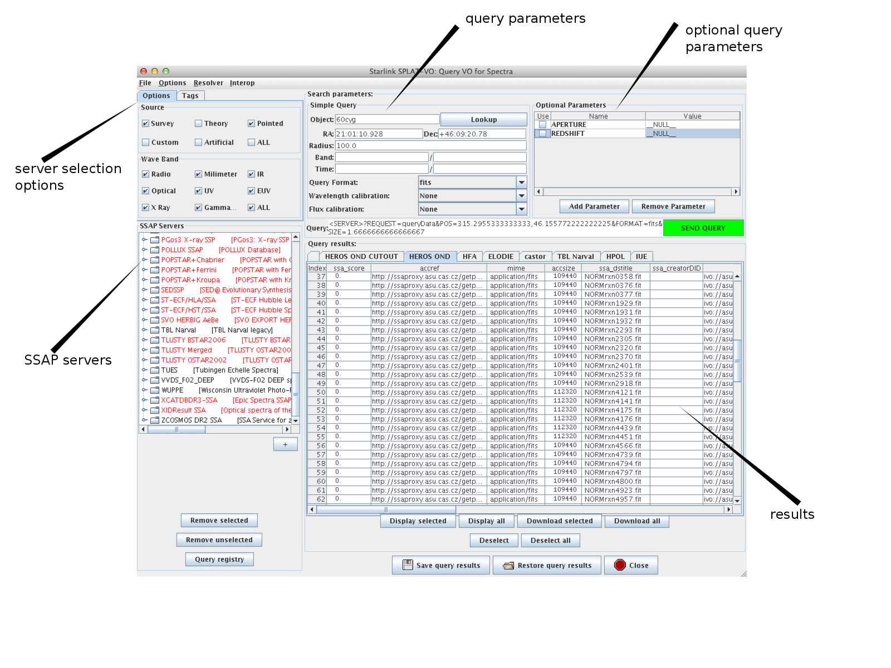

Server Listing/Selection test
- check server properties
- click on a server
- server properties + capability branch will appear
- Click on capabilities (in the properties)
- server capabilities will appear
- remove selected / unselected
- select any four servers and click remove selected
- the selected servers are removed
- select any four servers and click remove unselected
- all but the selected servers are removed
- query registry
- click query registry button
- list of servers from registry is loaded
- manually added servers (not in the registry) remain (not removed)
- servers that were already in the server list are overwritten (no double entries)
- select waveband and datasource
- check data source = ALL and waveband=ALL
- data source all selected : all servers selected (black)
- select waveband (data source=ALL)
- data source all not selected:only servers with selected wavebands are black
- select data source (waveband=ALL)
- data source all not selected:only servers with selected data sources are black
- waveband and data source != ALL
- check combinations for correctness
- create new tag
- click "add tag" without selecting servers
- click "add tag" selecting one or more servers
- with a new tag name
- with same name as an existing one
- remove tag
- select tag and click remove tag
- click remove tag without selecting
- save/load current server list by quit/start
- add/remove some servers and quit start, then start splat again
- the server list should be the same as when splat was quit
Simple Query test
- object
- type an object name (e.g. "vega") and click the LOOKUP Button
- Coordinates will appear
- Coordinates and no targetname appear in QUERY line
- Clear object field, type an object name (e.g. "jupiter") and do not click LOOKUP (click GO instead)
- targetname will appear in QUERY line
- Coordinates will be removed
- clear Object, RA and DEC fields and click GO
- Splat will ask if it' OK to query the whole sky (click OK or CANCEL)
- Splat will show results for all responding servers
- coordinates
- type valid coordinates
- QUERY String only shows coordinates when both (RA,DEC) are not null
- Target field should be cleared
- type coordinates in invalid format, e.g. "35d*xh:e"
- error message will appear
- radius
- type a valid radius
- Query string accordingly updated
- Radius =0: no radius in query string
- type an invalid radius, e.g. "344gx0:"
- band
- type both values (lower/upper)
- resulting query string: lower/upper
- type only left value (lower)
- resulting query string : lower/
- type only right value (upper)
- resulting query string : /upper
- type an invalid text either side, e.g. "g:x23;!"
- type lower larger than upper value
- time
- type both values (lower/upper)
- resulting query string: lower/upper
- type only left value (lower)
- resulting query string : lower/
- type only right value (upper)
- resulting query string : /upper
- type invalid text in either side, e.g. "g:x23;!"
- type lower larger than upper value
- format
- choose a format
- updated in query string
- for "none": nothing in query string
- wavelength calibration
- choose a wavelength calibration
- updated in query string
- for "none": nothing in query string
- flux calibration
- choose a flux calibration
- updated in query string
- for "none": nothing in query string
- Query String
- change different values in query form and compare to query string field
- updated when form changed
- insert characters in form field
- delete characters in form field
- compare query string with sent query (logfile)
Optional Parameters test
- add parameter
- select all servers (waveband/data source=ALL) and click Add parameter
- all found parameters will appear in the list
- select a few servers and click Add Parameter
- only parameters from selected servers appear in the list
- parameter checkbox
- check / uncheck parameter box
- parameter appears/disappears from query string
- parameter value
- change the value of a parameter (non empty)
- query string will be updated if parameter is checked
- parameter value is empty
- parameter does not appear in query string even if checked
- Query string correctly updated
- check query string after adding
- parameter will appear if checked and value not empty
- check query string after removing parameter
- parameter will disappear from query string
- check query string after changing value of a parameter
- correctly updated after RETURN
- correctly updated while typing
Results test
- Results shown in box
- Download single spectra
- download selected spectra (more than 1)
- save query results
- load query results
- Authentication